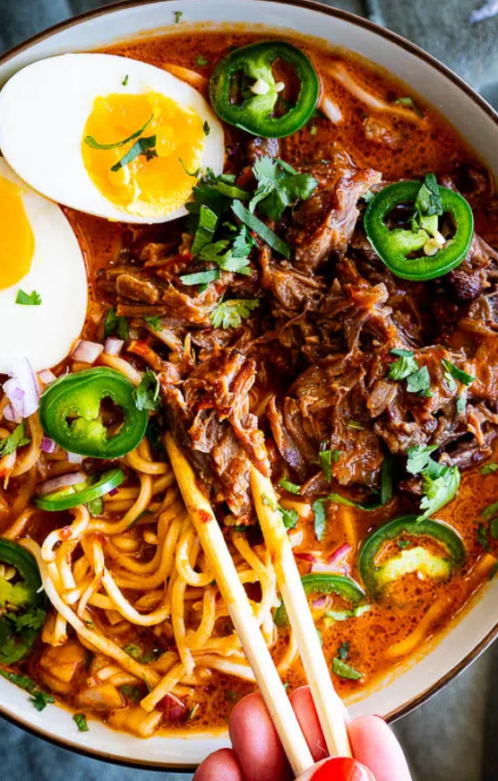

This Birria Ramen recipe delivers delicious broth packed with flavor. Served with shredded beef, noodles and a jammy egg, it's the most comforting soup-season meal.
Birria ramen is a combination of two iconic dishes, Birria and Ramen. Birria is a Mexican dish consisting of meat (goat meat, beef, chicken/birria de pollo) that is stewed in a rich broth (consommé) with chiles and aromatics until fall-apart tender. The stew can be served over rice or with tortillas and accompaniments like lime, onion, etc. My chicken birria tacos is another great way to serve birria.Ramen is a Japanese dish consisting of noodles and a flavorful broth made with soy sauce, miso, dashi and topped with a variety of toppings like pork, nori, Narutomaki (fish cakes), etc.
Soak the dried guajillo chiles in boiling water for 20 minutes then drain. Set the Instant Pot to the sauté function and season the oxtail generously with salt. Sear the meat in a splash of vegetable oil until golden brown on all sides. Add the onion, garlic, carrot, celery, bay leaves, oregano and cumin. Drain the chiles and add to the pot with the chipotles and 2 tbsp of adobo sauce.Pour in the beef broth and season with salt, pepper and a large pinch of sugar. Seal with the lid then cook on high pressure for 1 hour. Quick release the pressure then remove the meat from the broth. Shred the beef and discard the bones and any excess fat. Blend the birria broth in a blender until smooth then strain through a fine mesh sieve. To serve, add cooked noodles to large serving bowls and top with the shredded beef. Pour over the birria consommé and garnish with a jammy boiled egg, sliced jalapeño and chopped red onion then serve.